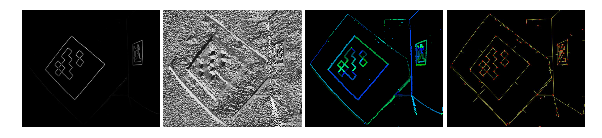
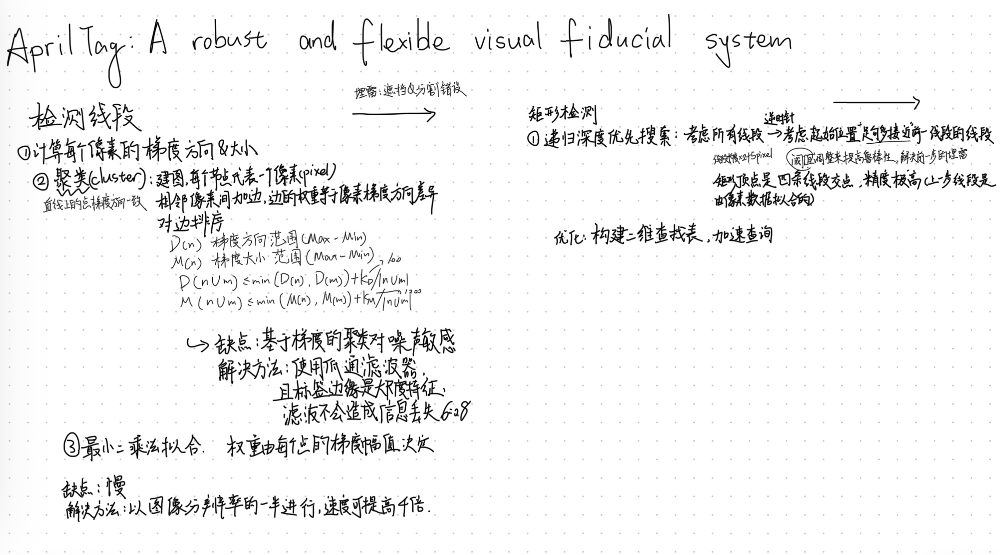
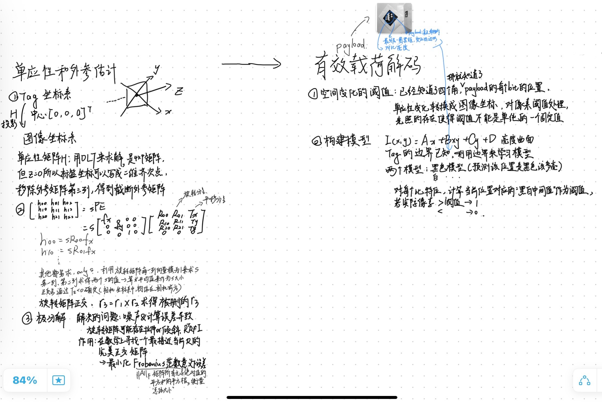
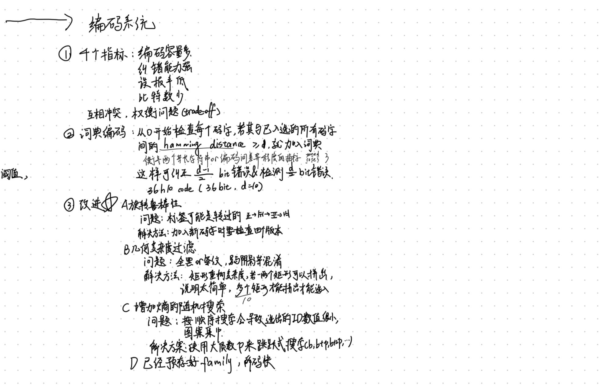

Technical Note
AprilTag是一种视觉基准系统，AprilTag检测软件计算标签相对于摄像机的精确3D位置，方向和标识，只要把这个tag贴到目标上，就可以在识别出这个标签的3D位置和id。
几种常见的：
TAG16H5 → 0 to 29
TAG25H7 → 0 to 241
TAG25H9 → 0 to 34
TAG36H10 → 0 to 2319
TAG36H11 → 0 to 586
ARTOOLKIT → 0 to 511
不同family，可能格子不同（ex. 4*4, 6*6 格子少可视距离更远，但校验信息更少错误率更高）



